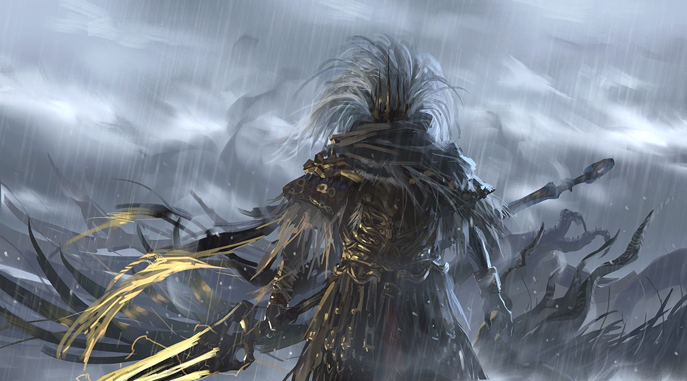

Sobre seu lançamento
Dark Souls 3 é um jogo do género RPG de ação, o quarto da série Souls,
desenvolvido pela FromSoftware e co-realizado por Hidetaka Miyazaki,
o criador da série. Dark Souls 3 foi lançado para Microsoft Windows,
PlayStation 4 e Xbox One no dia 24 de março de 2016 no Japão,
e a 12 de abril de 2016 no resto do mundo.

Boss: Ponte do silvio

Boss: Baiano sem nome
História de Dark Souls 3
Cada Dark Souls se passa em um lugar diferente.
Iniciamos a jornada no Asilo do Mortos Vivos e somos levados por um corvo gigante para Lordran,
a terra dos antigos deuses. Um lugar magnífico e decadente, criado no início da Era do Fogo,
após a destruição dos Dragões Imortais. No segundo game, visitamos uma terra aparentemente distante,
e misteriosa quanto a sua localização no mundo, Drangleic, o reino de Vendrick,
cujas terras foram infestadas por mortos vivos vindos de longe, e que surgiram de sua própria terra.
E eis que em Dark Souls III conhecemos Lothric,
lugar onde as terras dos Lordes das Cinzas convergem.
E logo no inicio vemos esses mesmos Lordes acordando de seus túmulos ao som do sino que avisa que a Primeira Chama,
a mesma que trouxe a disparidade para o mundo e fez com que a humanidade surgisse da escuridão,
estava prestes a se apagar. Aldrich, o santo das profundezas,
acordou de sua tumba e rumou para Irithyll do Vale Boreal,
um lugar muito emblemático. Os Vigilantes do Abismo, que seguem o Pacto do Sangue do Lobo,
algo bem familiar, voltaram para a Fortaleza de Farron. E Yhorm, o Gigante Recluso voltou para a Capital Profanada,
lugar que ele tentou salvar ao se tornar um Lorde das Cinzas.